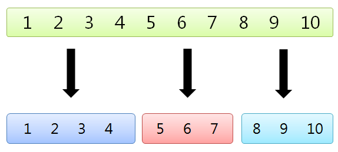

コレクションの要素を、指定した数のコレクションに分割する方法を示します。サンプルでは、10 個の整数を含む HashSet<int> を 3 個の HashSet<int> に分割します。

本方法では、コレクションから列挙される順番にそって要素を均等に振り分けます。つまり、要素数 90 のコレクションを 3 つのコレクションに分割する場合、最初の 30 個を 1 番目のコレクションに、次の 30 個を 2 番目のコレクションに、残りの 30 個を 3 番目のコレクションに割り当てます。また、コレクションの要素の列挙操作 (GetEnumerator メソッドの呼び出し) をコード内で 1 回に抑えます。実際の列挙回数は ICollection<T> の実装内容に依存しますが、標準的なコレクションでは 1 回で済みます。
コレクションの分割を LINQ を使って単純に書けば、以下のようになります。
var coll = new HashSet<int>(Enumerable.Range(1, 30)); var first = new HashSet<int>(coll.Skip( 0).Take(10)); var secon = new HashSet<int>(coll.Skip(10).Take(10)); var third = new HashSet<int>(coll.Skip(20).Take(10));
var coll = new HashSet<int>(Enumerable.Range(1, 30)); var first = new HashSet<int>(coll.Skip( 0).Take(10)); var secon = new HashSet<int>(coll.Skip(10).Take(10)); var third = new HashSet<int>(coll.Skip(20).Take(10));
上のコードでは、30 個の要素をもつコレクションを、要素数 10 の 3 つのコレクションに分割しています。しかしこの処理では、GetEnumerator メソッドが 3 回呼ばれており、コレクションの要素数を n 、分割数を m とすると、O(nm) 操作になると考えられます。
これを 1 回の呼び出しで済ますために、次の拡張メソッド (とヘルパーメソッド) を定義します。
public static IEnumerable<IEnumerable<T>>
Divide<T>(this ICollection<T> collection, int divisions)
{
// 分割後の 1 コレクションあたりの要素数を求める
int capacity = collection.Count / divisions;
int remainder = collection.Count % divisions;
using (var enumerator = collection.GetEnumerator())
{
// コレクションの要素数が分割数で割り切れない時の処理
for (int i = 0; i < remainder; i++)
yield return Take(enumerator, capacity + 1);
for (int i = remainder; i < divisions; i++)
yield return Take(enumerator, capacity);
}
}
// 指定した数だけ列挙子を進める
private static IEnumerable<T> Take<T>(IEnumerator<T> enumerator, int count)
{
while (--count >= 0 && enumerator.MoveNext())
yield return enumerator.Current;
}
public static IEnumerable<IEnumerable<T>> Divide<T>(this ICollection<T> collection, int divisions) { // 分割後の 1 コレクションあたりの要素数を求める int capacity = collection.Count / divisions; int remainder = collection.Count % divisions; using (var enumerator = collection.GetEnumerator()) { // コレクションの要素数が分割数で割り切れない時の処理 for (int i = 0; i < remainder; i++) yield return Take(enumerator, capacity + 1); for (int i = remainder; i < divisions; i++) yield return Take(enumerator, capacity); } } // 指定した数だけ列挙子を進める private static IEnumerable<T> Take<T>(IEnumerator<T> enumerator, int count) { while (--count >= 0 && enumerator.MoveNext()) yield return enumerator.Current; }
GetEnumerator メソッドによって新しい列挙子を作成しなくてもすむように、IEnumerator<T> に対して指定した数だけ MoveNext メソッドを呼び出す Take メソッドを繰り返し使用しています。Take メソッドを抜けた後、列挙子は破棄されず途中の要素を指したままなので、再び Take メソッドを呼び出せば、その続きから指定した数だけ要素を取得できる仕組みです。
なお、Divide メソッド内の場合分けは、コレクションの要素数がコレクションを分割する数で割り切れない場合を処理するためです。例えば、要素数 11 のコレクションを 3 分割する場合、11 ÷ 3 = 3 余り 2 となります。今回の仕様は「コレクションから列挙される順番にそって、要素を振り分ける」としたので、11 個の要素は 4, 4, 3 と連続的に分かれるようにする必要があります。したがって、余りが出た場合は、それに等しい数だけコレクションの要素数を 1 個余分に多くします (capacity + 1 の部分) 。
Divide 拡張メソッドは次のように使用します。
var coll = new HashSet<int>(Enumerable.Range(0, 30)); var query = from sub in coll.Divide(3) select new HashSet<int>(sub); var sets = query.ToArray();
var coll = new HashSet<int>(Enumerable.Range(0, 30)); var query = from sub in coll.Divide(3) select new HashSet<int>(sub); var sets = query.ToArray();
Divide メソッドの実行は遅延実行になります。GetEnumerator メソッドが呼ばれるまで、実際のコレクションの分割操作は行われません。
ICollection<T> に対する拡張メソッドとして書いたので、HashSet<T> だけでなく List<T> や Dictionary<TKey,TValue> に対しても同様の分割操作が実行できます。さらに、戻り値が IEnumerable<...> なので別の LINQ クエリ演算子を続けることが可能です。
拡張メソッドの ICollection<T> を IReadOnlyCollection<T> (.NET 4.5 向け) にしても動作します。
なお、本サンプルは How to divide a collection of objects in HashSet http://social.msdn.microsoft.com/Forums/en-US/csharpgeneral/thread/bc6ff5bc-e8d9-45e7-abeb-acd9e0fd2c5f/#8622d12f-380a-427c-9dbf-ad5ecbc502a3 での調査をまとめたものです。